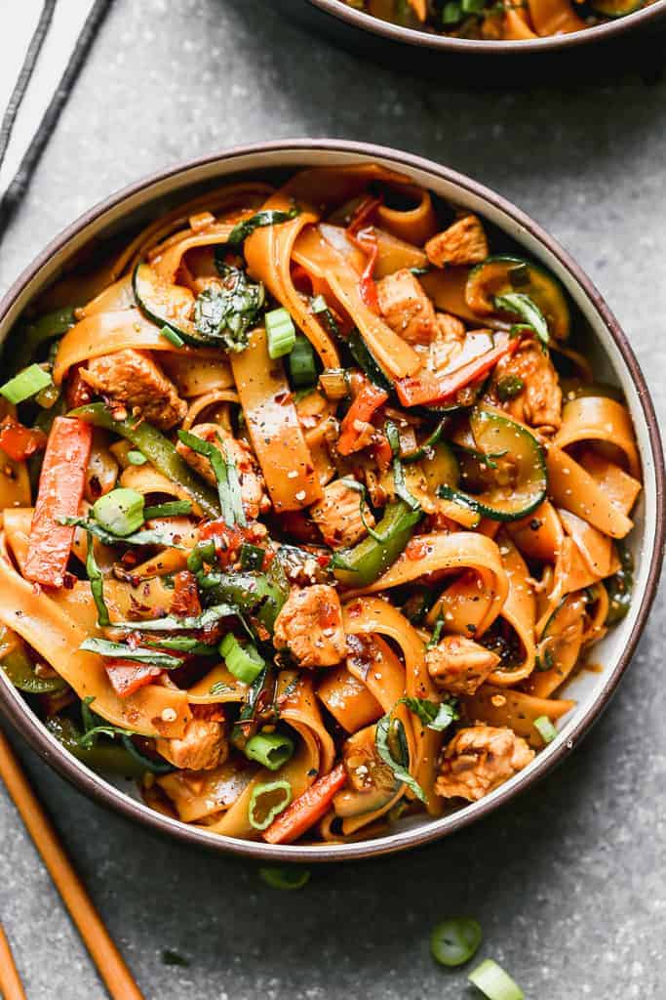

Drunken Noodles

Description
Also known as Pad Kee Mao, this is a popular Thai stir fry noodle dish.
Kaitlin and I made this for the first time for a dinner with her parents,
with no previous experience cooking similar dishes or even most of the ingredients on this list.
However, it turned out beautiful and delicious.
Ingredients
- 8 oz wide rice noodles
- 2 Tbsp sesame/canola oil
- 2 shallots (chopped)
- 2 carrots (thinly sliced)
- 2 large chicken breasts (chopped)
- 3 large cloves garlic (minced)
- 1/2 teaspoon fresh minced ginger
- 1 zucchini (thinly sliced)
- 1 green bell pepper (thinly sliced)
- 2 green onions (chopped)
- 1 roma tomatoes (sliced)
- 1 cup fresh Thai Holy Basil leaves (roughly chopped)
Sauce
- 3 Tbsp oyster sauce
- 1/3 cup low sodium soy sauce
- 2 teaspoons fish sauce
- 2 teaspoons brown sugar
- 2 Tbsp water
- 1 teaspoon Thai red chili paste, more or less to taste
Steps
- Cook noodles according to package instructions.
- Mix sauce in a small bowl and set aside.
-
Heat 1 tablespoon of oil in wok or large skillet over high heat.
Add shallots and carrot and cook for 2 minutes.
Add another tablespoon of oil to the pan.
Add chicken and season with pepper, cooking until it's cooked through.
Add garlic and ginger and cook for 10 seconds.
Add bell pepper, zucchini, tomato and the whites of the chopped green onion and cook for 2 minutes.
-
Add noodles to the pan and pour the sauce over the noodles.
Toss and cook for a few minutes until warmed through.
Remove from heat and stir in chopped basil.
- Serve immediately, garnished with remaining green onion and extra chili sauce, sriracha, or crushed red pepper, for added spice.
Home